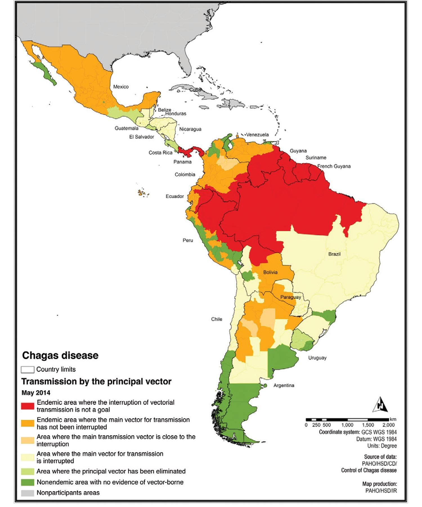

Trypanosomiase américaine
Maladie de Chagas — Trypanosoma cruzi
Maladie silencieuse de la migration : 2 000 à 4 000 personnes infectées vivent en Suisse, la plupart sans le savoir. Un dépistage sérologique simple suffit au diagnostic. Sans traitement, 20–30 % développeront une cardiomyopathie potentiellement fatale après 10–30 ans d'évolution asymptomatique.
Épidémiologie
Données mondiales
- 6–7 millions de personnes infectées dans le monde, principalement en Amérique latine (OMS 2024)[5]
- Zone endémique : du sud des États-Unis à l'Argentine/Chili, excluant les Caraïbes insulaires — 21 pays endémiques
- Environ 75 millions de personnes vivent en zone à risque ; ~12 000 décès/an (principalement morts subites cardiaques)[13]
- 1re cause de cardiomyopathie non ischémique en Amérique latine[13]
- Pays les plus touchés : Bolivie, Argentine, Brésil, Paraguay, Colombie, Mexique
Données suisses et européennes
- En Europe, la maladie de Chagas est exclusivement liée à la migration — pas de vecteur triatome autochtone
- Prévalence poolée chez les migrants latino-américains en pays non endémiques : 3,5 % (IC 95 % : 2,5–4,7 %), méta-analyse 2024 sur 51 études et 82 369 personnes dépistées[10]
- Chez les Boliviens : 21,5 % (1 715/7 964) vs 0,72 % pour les autres nationalités[10]
- En Suisse : estimation de 2 000–4 000 personnes infectées (population latino-américaine ~45 000–50 000)[8]
- Canton de Vaud (2011–2012) : prévalence 2,3 % chez les migrants, 18,0 % chez les Boliviens, 0 % chez les voyageurs ; dépistage communautaire bien plus performant que le dépistage hospitalier[9]
- Pas de programme national de dépistage en Suisse (ni prénatal, ni don du sang au-delà du questionnaire, ni médecine de premier recours)[8]
Transmission congénitale
- Proportion poolée de transmission verticale en pays non endémiques : 4,4 % (IC 95 % : 3,3–5,8 %)[10]
- En Espagne (Madrid, 2012–2016) : taux de TV = 2,75 % (IC 95 % : 0,57–8,8 %)[14]
- Traitement néonatal : > 95 % de guérison si traitement précoce par benznidazole[14]
- Coût-efficacité du dépistage prénatal confirmé en contexte européen[15]
⚠ Chagas en Suisse : une maladie sous-diagnostiquée
- Seuls quelques centaines de patients sont diagnostiqués en Suisse, alors que 2 000–4 000 personnes seraient infectées[8]
- Le dépistage repose entièrement sur l'initiative du médecin de premier recours : penser à demander la sérologie chez tout patient né en Amérique latine continentale
- Le Swiss Chagas Network (créé en 2024) vise à structurer le dépistage et la prise en charge[8]
Répartition géographique
Zone endémique
- Du sud des États-Unis à l'Argentine/Chili, avec exclusion des Caraïbes insulaires
- Foyers de transmission vectorielle les plus intenses : Bolivie (Gran Chaco), nord de l'Argentine, Paraguay, sud du Brésil
- Succès des programmes de lutte antivectorielle : interruption de la transmission vectorielle par Triatoma infestans au Brésil (2006), Uruguay, Chili
- Transmission péridomiciliaire persistante dans les zones rurales d'Amérique centrale et en Amazonie (cycle sylvatique)

Globalisation par la migration
Transmission & cycle parasitaire
Vecteur principal
- Triatome (punaise réduve, « vinchuca », « kissing bug ») — insecte hématophage nocturne de la famille des Reduviidae
- Plus de 150 espèces de triatomes ; les principales espèces vectrices : Triatoma infestans (Cône Sud), Rhodnius prolixus (Amérique centrale, nord de l'Amérique du Sud), Triatoma dimidiata (Mexique, Amérique centrale)
- Le triatome vit dans les fissures des murs en adobe, les toits de chaume, le mobilier — habitations rurales précaires
- Mécanisme : le triatome pique (souvent au visage), puis défèque ; les trypomastigotes métacycliques contenus dans les fèces pénètrent par la plaie de piqûre, les muqueuses ou les excoriations de grattage
Autres modes de transmission
| Mode | Fréquence | Commentaire |
|---|---|---|
| Vectorielle | Principale en zone endémique | Inexistante en Europe (pas de triatome autochtone) |
| Congénitale | 4,4 % en pays non endémiques[10] | Principal mode de transmission en Europe ; > 95 % de guérison si traitement néonatal |
| Transfusionnelle | Rare (dépistage systématique en zone endémique) | En Suisse, dépistage par questionnaire uniquement[36] |
| Transplantation d'organe | Rare | Risque de réactivation sous immunosuppression |
| Orale | Épidémies focales (Amazonie, Colombie) | Jus de fruits contaminés (açaï, canne à sucre) ; forme aiguë sévère |
| Accidentelle | Exceptionnelle | Laboratoire, piqûre accidentelle |
Cycle parasitaire simplifié
- Trypomastigotes métacycliques (fèces du triatome) → pénétration cutanée/muqueuse
- Invasion cellulaire → transformation en amastigotes intracellulaires (multiplication)
- Libération de trypomastigotes sanguins (détectables au frottis en phase aiguë)
- Le triatome s'infecte lors d'un repas sanguin → multiplication dans le tube digestif → élimination dans les fèces
Présentation clinique
L'histoire naturelle de la maladie de Chagas se divise en trois phases distinctes. En contexte suisse, la phase chronique indéterminée est de loin la plus fréquente.[1,2]
Phase aiguë (rarement diagnostiquée en Europe)
- Incubation : 1–2 semaines (vectorielle) ; plus courte en transmission orale
- Signe de Romaña : œdème palpébral unilatéral indolore (porte d'entrée conjonctivale) — pathognomonique mais inconstant
- Chagome : nodule cutané érythémateux au point d'inoculation
- Fièvre, malaise, hépatosplénomégalie, adénopathies, œdème facial ou des membres
- Formes sévères (rares, < 5 %) : myocardite aiguë, méningo-encéphalite (surtout chez l'enfant et l'immunodéprimé)
- Mortalité de la phase aiguë : 2–8 % (principalement enfants < 2 ans)
- La plupart des cas passent inaperçus (symptômes non spécifiques)
Phase chronique indéterminée
- Succède à la phase aiguë après 4–8 semaines ; le patient est asymptomatique
- Sérologie positive, mais ECG, radiographie thoracique et examens digestifs normaux
- 60–70 % des infectés restent dans cette phase toute leur vie
- Parasitémie intermittente de bas grade (PCR positive ~50–70 % du temps)[4]
- C'est la phase la plus fréquente chez les patients dépistés en Suisse
Phase chronique déterminée (symptomatique)
- Se développe chez 20–30 % des personnes infectées, après 10–30 ans d'évolution silencieuse[1]
- Forme cardiaque (la plus grave et la plus fréquente) : cardiomyopathie chagasique
- Forme digestive : mégaœsophage, mégacôlon (plus fréquente au Brésil et en Bolivie)
- Forme mixte : atteinte cardiaque + digestive
| Phase | Durée | Symptômes | Diagnostic | Fréquence en Suisse |
|---|---|---|---|---|
| Aiguë | 4–8 semaines | Fièvre, Romaña, chagome, malaise | Parasitémie directe, PCR +++ | Exceptionnelle |
| Chronique indéterminée | Décennies (voire à vie) | Aucun | Sérologie (2 tests concordants) | Très fréquente |
| Chronique cardiaque | 10–30 ans post-infection | Palpitations, dyspnée, syncope, mort subite | Sérologie + ECG/écho anormaux | Fréquente |
| Chronique digestive | 10–20 ans post-infection | Dysphagie, constipation sévère | Sérologie + transit/lavement baryté | Occasionnelle |
⚠ Réactivation chez l'immunodéprimé
- VIH/SIDA (CD4 < 200), transplantation d'organe, chimiothérapie
- Tableau : méningo-encéphalite (lésions tumorales à l'IRM), myocardite aiguë, chagome cutané
- Mortalité élevée si non diagnostiquée
- Monitoring par PCR chez tout patient latino-américain avant/pendant immunosuppression
Complications cardiaques et digestives
Cardiomyopathie chagasique
Forme la plus fréquente et la plus grave de la phase chronique (20–30 % des infectés). Première cause de mort subite chez les jeunes adultes en zone endémique.[13]
Physiopathologie :
- Inflammation chronique myocardique avec fibrose progressive
- Dénervation sympathique parasympathique
- Micro-angiopathie coronarienne
- Persistance parasitaire (amastigotes) dans le myocarde
Anomalies ECG précoces (souvent les premiers signes) :
- Bloc de branche droit (BBD) — souvent le tout premier signe
- Hémibloc antérieur gauche (HBAG)
- Blocs auriculo-ventriculaires
- Extrasystoles ventriculaires
- Bradycardie sinusale
Échocardiographie (recommandations WHF 2023)[12] :
- Dysfonction systolique globale (FEVG diminuée)
- Anévrisme apical du ventricule gauche — quasi pathognomonique
- Troubles de la cinétique segmentaire (paroi inféro-latérale ++)
- Thrombus intracavitaire
- Dilatation des 4 cavités (stade avancé)
- Speckle tracking : GLS diminué, pattern spécifique — détecte l'atteinte subclinique[22]
IRM cardiaque :
- Rehaussement tardif au gadolinium (LGE) : fibrose transmurale, typiquement inféro-latérale et apicale
- LGE = marqueur de risque d'arythmie ventriculaire et de mort subite[22,23]
- Pattern de LGE ≥ 11,78 % ou ≥ 2 segments transmuraux contigus = risque élevé d'arythmie[22]
| Score de Rassi | Critères | Mortalité à 10 ans |
|---|---|---|
| Faible risque | ECG peu altéré, FEVG conservée | ~10 % |
| Risque intermédiaire | BBD + HBAG, ESV modérées, FEVG légèrement diminuée | ~44 % |
| Risque élevé | TV soutenue, FEVG < 35 %, IC symptomatique, cardiomégalie | ~85 % |
Mégaœsophage chagasique
- Destruction des plexus nerveux entériques (plexus d'Auerbach) par T. cruzi
- Clinique similaire à l'achalasie idiopathique : dysphagie progressive, régurgitation, perte de poids
- Risque d'aspiration et de pneumopathies à répétition
| Classification de Rezende | Description |
|---|---|
| Grade I | Dilatation légère, motilité conservée |
| Grade II | Dilatation modérée, dyskinésie |
| Grade III | Dilatation importante, stase alimentaire |
| Grade IV | Dolicho-mégaœsophage (> 10 cm), aspect sigmoïde |
Mégacôlon chagasique
- Destruction des plexus nerveux entériques du côlon (principalement sigmoïde et rectum)
- Clinique : constipation sévère, fécalome, ballonnement, volvulus sigmoïde
- Diagnostic : lavement baryté (dilatation colique > 6,5 cm au sigmoïde), TDM abdominale
- Complications : volvulus sigmoïde (urgence chirurgicale), fécalome impacté, perforation[27]
Biologie
Phase aiguë
- Syndrome inflammatoire modéré (CRP, VS)
- Lymphocytose, parfois lymphocytes atypiques
- Élévation des transaminases, LDH
- Troponine / BNP élevés si myocardite aiguë
Phase chronique indéterminée
- Biologie standard généralement normale
- La sérologie (ELISA, IFI) est le seul marqueur
Phase chronique cardiaque
- BNP / NT-proBNP : marqueur de dysfonction ventriculaire et de pronostic
- Troponine : élévation possible en cas de myocardite chronique active
- NFS : à surveiller sous traitement par benznidazole (leucopénie, thrombopénie)
Diagnostic
Qui dépister ? (Recommandations pour le MG suisse)
Critères de dépistage en cabinet
- Tout patient né en Amérique latine continentale (du Mexique à l'Argentine, excluant les Caraïbes insulaires)
- Tout patient né d'une mère originaire d'Amérique latine continentale (risque de transmission congénitale)
- Femmes enceintes d'origine latino-américaine : dépistage au 1er trimestre
- Donneurs de sang/organes ayant vécu en zone endémique
- Patients immunodéprimés d'origine latino-américaine (avant immunosuppression si possible)
NB : les voyageurs de courte durée en hôtels/zones urbaines ont un risque négligeable — le dépistage post-voyage n'est pas recommandé sauf exposition particulière (habitat rural précaire, séjour prolongé).
Algorithme diagnostique
| Étape | Test | Commentaire |
|---|---|---|
| 1. Dépistage | Test diagnostique rapide (TDR) immunochromatographique | Sensibilité > 95 %, réalisable en cabinet ; résultat en 15–20 min |
| 2. Confirmation | Sérologie conventionnelle par 2 techniques différentes (ELISA + IFI, ou ELISA + immunoblot) | Concordance de 2 tests = diagnostic confirmé (OMS)[5] |
| 3. Discordance | 3e test sérologique (technique différente) | Laboratoire de référence |
Diagnostic en phase aiguë (rare en Europe)
- Mise en évidence directe : frottis sanguin (Giemsa), goutte épaisse, méthode de Strout (concentration)
- PCR : haute sensibilité en phase aiguë (> 95 %)[4]
- Sérologie : peut être négative dans les premières semaines (séroconversion en 4–8 semaines)
Place de la PCR en phase chronique
- La PCR n'est pas un test de dépistage en phase chronique (sensibilité insuffisante, parasitémie intermittente ~50–70 % de positivité)
- Utile pour le suivi post-traitement (négativation = bonne réponse parasitologique)
- Utile pour le monitoring de réactivation chez l'immunodéprimé[4]
Infection congénitale
- PCR à la naissance et à 1 mois de vie (sensibilité excellente chez le nouveau-né)
- Sérologie de confirmation après 9–10 mois (après disparition des anticorps maternels)[14]
Bilan de base après diagnostic confirmé
- ECG 12 dérivations (recherche BBD, HBAG, BAV, ESV)
- Échocardiographie (fonction VG, anévrisme apical, dilatation) — réf. WHF[12]
- Radiographie thoracique (cardiomégalie)
- Bilan digestif si symptômes (transit œsophagien, lavement baryté)
- Consultation spécialisée obligatoire (infectiologue ou tropicaliste)
⚠ Piège diagnostique
- PCR négative ≠ pas d'infection : en phase chronique, la parasitémie est intermittente. La sérologie est le gold standard du dépistage.
- Un seul test sérologique ne suffit pas : l'OMS exige la concordance de 2 tests utilisant des antigènes différents. En cas de discordance, un 3e test est requis.[5]
Traitement
Indications du traitement trypanocide
| Situation clinique | Indication | Commentaire |
|---|---|---|
| Phase aiguë | Toujours traiter | Taux de guérison élevé |
| Infection congénitale | Toujours traiter | > 95 % de guérison si traitement précoce[14] |
| Chronique indéterminée | Traiter | Recommandation OMS ; surtout femmes en âge de procréer et patients < 50 ans[5] |
| Chronique + cardiomyopathie établie | Discuter au cas par cas | Bénéfice clinique NON démontré (étude BENEFIT)[7] |
| Réactivation (immunodéprimé) | Toujours traiter | Urgence thérapeutique |
Benznidazole (BZN) — 1re ligne
- Posologie adulte : 5–7 mg/kg/j en 2–3 prises, pendant 60 jours
- Disponibilité en Suisse : importation via demande au médecin cantonal
- Effets indésirables (30–50 % des patients) :
| Effet indésirable | Fréquence | Conduite |
|---|---|---|
| Dermatite allergique (éruption cutanée) | 20–30 % | Dose-dépendante ; antihistaminiques, réduction de dose |
| Neuropathie périphérique | 5–10 % | Arrêter immédiatement — potentiellement irréversible |
| Troubles digestifs (nausées, anorexie) | Fréquent | Prise avec les repas |
| Leucopénie, thrombopénie | Rare mais grave | NFS hebdomadaire |
Taux d'arrêt prématuré : ~15–20 %[17,18]
Nifurtimox (NFX) — alternative
- Posologie adulte : 8–10 mg/kg/j en 3–4 prises, pendant 60–90 jours
- Profil d'effets indésirables similaire, avec prédominance de troubles digestifs et neuro-psychiatriques[30]
- L'essai EQUITY compare directement BZN vs NFX vs placebo[19]
MULTIBENZ — vers des schémas courts (Lancet Infect Dis 2024)
Essai MULTIBENZ — phase 2b, n = 234[11]
- BZN 300 mg/j × 60 j (standard) vs 150 mg/j × 60 j (faible dose) vs 400 mg/j × 15 j (court)
- Négativation parasitologique soutenue à 12 mois : 54 % vs 61 % vs 58 % — pas de différence significative
- Arrêts prématurés : 14 % (standard) vs 2 % (court) (p = 0,044)
- Implication : schéma court 15 jours pourrait offrir efficacité similaire avec meilleure tolérance
- Essai de phase III NuestroBen en cours[20]
Étude BENEFIT — référence pour la cardiomyopathie (NEJM 2015)
BENEFIT : le BZN ne prévient pas la progression cardiaque[7]
- n = 2 854, BZN vs placebo, suivi moyen 5,4 ans
- Événement primaire composite (décès, arrêt cardiaque, TV soutenue, PM/DAI, transplant, IC, AVC) : 27,5 % (BZN) vs 29,1 % (placebo) — HR 0,93 (IC 95 % : 0,81–1,07), p = 0,31
- Conversion PCR : 66 % (BZN) vs 34 % (placebo), p < 0,001 — mais sans traduction clinique
- Conclusion : traiter en phase indéterminée (avant l'atteinte d'organe), pas en cardiomyopathie établie
Fexinidazole pour Chagas — FEXI-12 (Lancet Infect Dis 2024)
- 3 régimes à faible dose testés (n = 45) : bonne tolérance mais inefficace (rebound parasitaire à 10 semaines)[21]
- Développement du fexinidazole en monothérapie pour Chagas arrêté
Traitement symptomatique
Cardiomyopathie chagasique :
- Insuffisance cardiaque : traitement standard (IEC/ARA2, bêtabloquants, diurétiques, iSGLT2)[6]
- Arythmies : amiodarone (prudence), DAI si TV soutenue ou FE < 35 %
- Thromboprophylaxie : anticoagulation si FA, thrombus intracavitaire, anévrisme apical
- Transplantation cardiaque : option terminale (risque de réactivation sous immunosuppression — monitoring PCR)
Atteinte digestive :
Prévention
- Pas de vaccin disponible ni en développement clinique avancé
- Pas de chimioprophylaxie
- En zone endémique : amélioration de l'habitat (murs crépis, toits en dur), pulvérisation d'insecticides résiduels dans les habitations
- Voyageurs en zone rurale : moustiquaires imprégnées, éviter les habitations en adobe
- Dépistage systématique des migrants latino-américains = stratégie de prévention clé en Suisse
- Dépistage prénatal des femmes enceintes d'origine latino-américaine — permet traitement néonatal précoce (> 95 % de guérison)[15]
- Sécurisation transfusionnelle et des transplantations d'organes[36]
Pièges & perles cliniques
Ne pas penser à Chagas chez un patient latino-américain
En Suisse, la maladie de Chagas est une maladie de la migration, pas du voyage. Tout patient originaire d'Amérique latine continentale (ou né d'une mère de cette région) doit être dépisté — une seule prise de sang suffit. Prévalence : 3,5 % chez les migrants latino-américains, jusqu'à 18–21 % chez les Boliviens.[9,10]
Confondre « asymptomatique » avec « pas infecté »
60–70 % des personnes infectées restent asymptomatiques à vie (phase indéterminée). Mais 20–30 % développeront une cardiomyopathie potentiellement fatale après 10–30 ans. Le dépistage sérologique est le seul moyen de diagnostic en phase chronique indéterminée. La PCR peut être négative malgré une infection chronique active.[1]
Traiter une cardiomyopathie établie en espérant un bénéfice clinique
L'étude BENEFIT (n = 2 854) a démontré que le BZN ne réduit pas les événements cardiovasculaires si cardiomyopathie établie. Le traitement trypanocide est recommandé en phase chronique indéterminée (avant atteinte d'organe), pas en phase avancée.[7]
Oublier la transmission congénitale
Toute femme en âge de procréer infectée non traitée peut transmettre T. cruzi à son enfant (4,4 % de risque). Le dépistage prénatal des femmes latino-américaines permet un diagnostic et un traitement néonatal précoce (> 95 % de guérison).[10,14]
Le bloc de branche droit isolé chez un patient latino-américain
Un BBD chez un patient latino-américain jeune sans facteur de risque cardiovasculaire doit faire évoquer une cardiomyopathie chagasique débutante. Demander une sérologie Chagas avant d'attribuer le BBD à une variante de la normale.[6]
Perles cliniques
- Un TDR positif pour Chagas en cabinet → confirmation par sérologie au laboratoire de référence → consultation spécialisée — processus relativement simple
- Le schéma court de BZN (400 mg/j × 15 jours) pourrait bientôt remplacer le schéma standard de 60 jours (résultats NuestroBen attendus)[11,20]
- Le Swiss Chagas Network peut orienter les cliniciens suisses[8]
Conduite pratique pour le médecin de premier recours
Dépistage en cabinet
- Identifier les patients à risque : né(e) en Amérique latine continentale, ou né(e) d'une mère de cette région
- Prescrire une sérologie Chagas (ELISA) ou réaliser un TDR en cabinet
- Si sérologie positive ou TDR positif → confirmation par 2e test sérologique (technique différente)
- Si confirmation → bilan de base : ECG 12 dérivations, échocardiographie, radiographie thoracique
- Référer au spécialiste (infectiologue ou tropicaliste) pour décision thérapeutique et suivi
Situations particulières
- Femme enceinte latino-américaine : sérologie au 1er trimestre ; si positive → pas de traitement pendant la grossesse (tératogène) ; PCR chez le nouveau-né à la naissance et à 1 mois ; sérologie à 9–10 mois
- Patient immunodéprimé d'origine latino-américaine : sérologie systématique avant immunosuppression ; si positive → monitoring PCR régulier
- BBD isolé chez un patient latino-américain jeune : sérologie Chagas avant toute autre exploration
Suivi post-traitement
- NFS hebdomadaire pendant le traitement par BZN (surveillance leucopénie/thrombopénie)
- PCR à la fin du traitement, puis annuellement
- Sérologie de contrôle : déclin lent sur 5–20 ans après traitement efficace[16]
- ECG et échocardiographie annuels (même si phase indéterminée traitée)
Quand référer ?
- Toute sérologie Chagas confirmée positive — le traitement et le suivi relèvent du spécialiste (infectiologue ou tropicaliste)
- Femme enceinte séropositive — suivi spécialisé de la grossesse et dépistage néonatal
- Anomalies ECG/échocardiographiques chez un patient séropositif — co-suivi cardiologue + infectiologue
- Avant toute immunosuppression chez un patient d'origine latino-américaine séropositif
- Le BZN n'est pas disponible en pharmacie — importation via demande au médecin cantonal
Références
- de Sousa AS, Vermeij D, Ramos AN Jr, Luquetti AO. Chagas disease. Lancet. 2024;403(10422):203-218. DOI
- Hochberg NS, Manne-Goehler J, Montgomery SP. Chagas Disease. Ann Intern Med. 2023;176(2):ITC17-ITC32. DOI
- Swett MC, Rayes DL, Campos SV, Siddiqui MR. Chagas Disease: Epidemiology, Diagnosis, and Treatment. Curr Cardiol Rep. 2024;26(10):1117-1130. DOI
- Schijman AG, Alonso-Padilla J, Barreira F et al. Retrospect, advances and challenges in Chagas disease diagnosis: a comprehensive review. Lancet Reg Health Am. 2024;36:100821. DOI
- WHO/PAHO. Guidelines for the diagnosis and treatment of Chagas disease. Washington, D.C.: PAHO; 2019. Lien
- Marin-Neto JA, Rassi A, Oliveira GMM et al. SBC Guideline on the Diagnosis and Treatment of Patients with Cardiomyopathy of Chagas Disease — 2023. Arq Bras Cardiol. 2023;120(6):e20230269. DOI
- Morillo CA, Marin-Neto JA, Avezum A et al. Randomized Trial of Benznidazole for Chronic Chagas' Cardiomyopathy (BENEFIT). N Engl J Med. 2015;373(14):1295-1306. DOI
- Chollet V, Rapp E, Velarde-Rodriguez M et al. Chagas disease in Switzerland: current situation, challenges and opportunities. Swiss Med Wkly. 2024;154:3719. DOI
- Da Costa-Demaurex C, Cardenas MT, Aparicio H et al. Screening strategy for Chagas disease in a non-endemic country (Switzerland): a prospective evaluation. Swiss Med Wkly. 2019;149:w20050. DOI
- Nepomuceno de Andrade G, Bosch-Nicolau P, Nascimento BR et al. Prevalence of Chagas disease among Latin American immigrants in non-endemic countries: an updated systematic review and meta-analysis. Lancet Reg Health Eur. 2024;46:101040. DOI
- Bosch-Nicolau P, Fernandez ML, Sulleiro E et al. Efficacy of three benznidazole dosing strategies for adults living with chronic Chagas disease (MULTIBENZ): an international, randomised, double-blind, phase 2b trial. Lancet Infect Dis. 2024;24(4):386-394. DOI
- Ralston K, Zaidel E, Acquatella H et al. WHF Recommendations for the Use of Echocardiography in Chagas Disease. Glob Heart. 2023;18(1):27. DOI
- Echeverria LE, Marcus R, Novick G et al. WHF IASC Roadmap on Chagas Disease. Glob Heart. 2020;15(1):26. DOI
- Francisco-Gonzalez L, Rubio-San-Simon A, Gonzalez-Tome MI et al. Congenital transmission of Chagas disease in a non-endemic area, is an early diagnosis possible? PLoS One. 2019;14(7):e0218491. DOI
- Marraffa P, Dentato M, Nurchis MC et al. Cost-effectiveness analysis of screening for congenital Chagas disease in a non-endemic area. Nat Commun. 2025;16(1):8707. DOI
- Requena-Mendez A et al. Early assessment of antibodies decline in Chagas patients following treatment using a serological multiplex immunoassay. Nat Commun. 2024;15:10700. DOI
- Lascano F, Garcia Bournissen F, Altcheh J. Review of pharmacological options for the treatment of Chagas disease. Br J Clin Pharmacol. 2022;88(2):383-402. DOI
- Olivera MJ, Buitrago G. Monotherapy and combination chemotherapy for Chagas disease treatment: a systematic review of clinical efficacy and safety based on randomized controlled trials. Parasitology. 2022;149(14):1835-1849. DOI
- Sosa-Estani S et al. Cutaneous reactions during treatment with Nifurtimox or Benznidazole among T. cruzi seropositive adults (EQUITY trial safety sub-analysis). Trop Med Int Health. 2024. DOI
- Marques T, Forsyth C, Barreira F et al. New regimens of benznidazole for the treatment of chronic Chagas disease (NuestroBen study): protocol for a phase III randomised, multicentre non-inferiority clinical trial. BMJ Open. 2025;15(9):e098079. DOI
- Pinazo MJ, Forsyth C, Losada I et al. Efficacy and safety of fexinidazole for treatment of chronic indeterminate Chagas disease (FEXI-12): a multicentre, randomised, double-blind, phase 2 trial. Lancet Infect Dis. 2024;24(4):395-403. DOI
- Romero Acero LM, Gallego Ardila AD, Nanna M et al. Late Gadolinium Enhancement by Cardiac Magnetic Resonance and Speckle Tracking Echocardiography in the Evaluation of Cardiac Complications in Chagas Cardiomyopathy: A Systematic Review. Rev Cardiovasc Med. 2022;23(9):323. DOI
- Moll-Bernardes RJ, Rosado-de-Castro PH, Camargo GC et al. New Imaging Parameters to Predict Sudden Cardiac Death in Chagas Disease. Trop Med Infect Dis. 2020;5(2):74. DOI
- Abud TG, Abud LG, Vilar VS et al. Radiological findings in megaesophagus secondary to Chagas disease: chest X-ray and esophagogram. Radiol Bras. 2016;49(6):358-362. DOI
- Saraiva RM, Mediano MFF, Mendes FSNS et al. Chagas heart disease: An overview of diagnosis, manifestations, treatment, and care. World J Cardiol. 2021;13(12):654-675. DOI
- Marchiori E, Hochhegger B, Zanetti G. Chagas Disease: An Important Cause of Megaesophagus in Latin America. Arch Bronconeumol. 2017;53(8):450. DOI
- Garcia Orozco VH. Digestive Disorders in Chagas Disease: Megaesophagus and Megacolon. In: IntechOpen 2022. Lien
- Jackson Y, Castillo S, Hammond P et al. Metabolic, mental health, behavioural and socioeconomic characteristics of migrants with Chagas disease in a non-endemic country. Trop Med Int Health. 2012;17(5):595-603. DOI
- Perez-Molina JA, Molina I. Trypanocidal treatment of Chagas disease. Enferm Infecc Microbiol Clin (Engl Ed). 2021;39(9):458-464. DOI
- Thakare R et al. Update on nifurtimox for treatment of Chagas disease. Drugs Today (Barc). 2021;57(4):251-263. DOI
- Moscatelli G et al. Efficacy of short-course treatment for prevention of congenital transmission of Chagas disease. PLoS Negl Trop Dis. 2024;18(1):e0011895. DOI
- Ascanio LC et al. Diagnostic methods of Chagas disease in the clinical laboratory: a scoping review. Front Microbiol. 2024;15:1393992. DOI
- Schijman AG et al. Parasitological, serological and molecular diagnosis of acute and chronic Chagas disease: from field to laboratory. Mem Inst Oswaldo Cruz. 2022;117:e200444. DOI
- BMJ Best Practice. Chagas disease — Symptoms, diagnosis and treatment. Updated Oct 2025. Lien
- CDC. Chagas Disease — DPDx Laboratory Identification. Lien
- Angheben A, Boix L, Buonfrate D et al. Chagas disease and transfusion medicine: a perspective from non-endemic countries. Blood Transfus. 2015;13(4):540-550. DOI
- StatPearls. Chagas Disease (updated Mar 2025). Lien